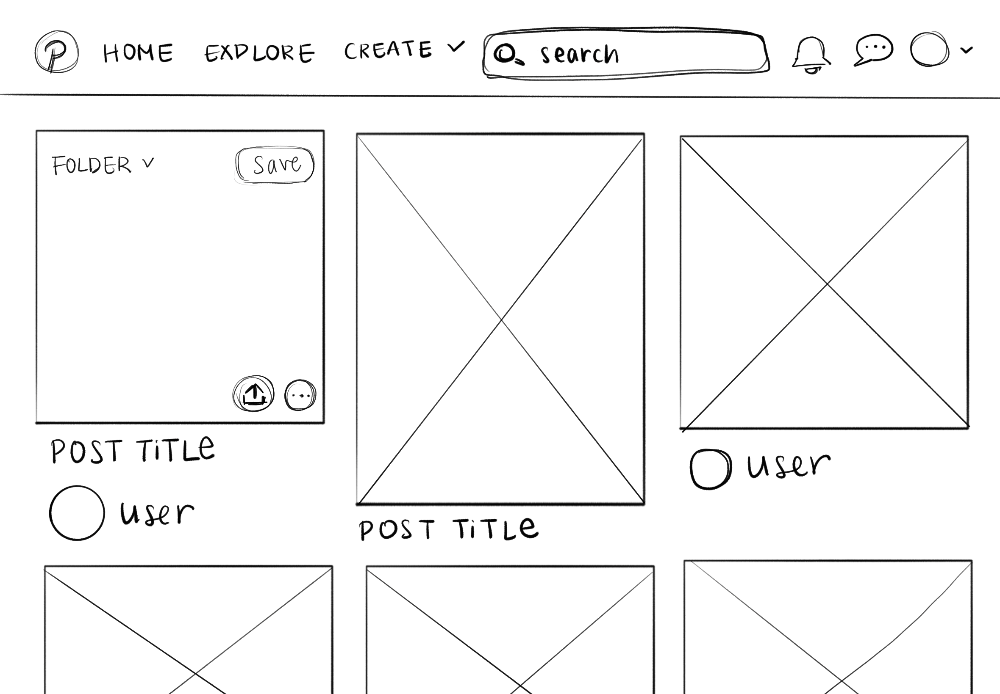
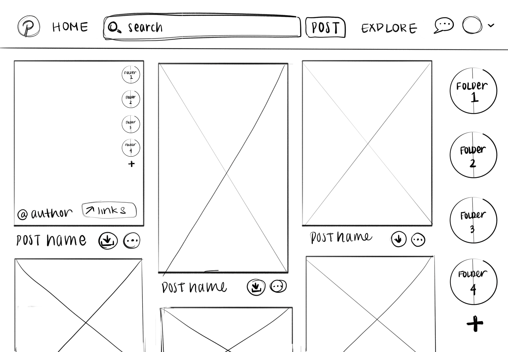

-
Using the favorite website you chose in homework 1, create a wireframe for one page of it using pen/paper, PowerPoint, or any your tool of choice. (use the 'img' tag!) Make sure to let us know what the name of your website is (Use the 'p' tag!)
Pinterest:
 -
Try to improve the website you've chosen, and create a redesigned wireframe of one page for the same website using the principles of visual hierarchy that you learned from the article.
Improved (?) Pinterest:

-
What is the goal of the website? Who is it intended for? How does the design accomplish this? Write 2-3 sentences answering these questions. (Use the 'p' tag again!)
The main purpose of pinterest is a moodboard of images where people can curate "folders" that have a theme. It is most commonly used by people in visual design (ie: art, wedding planning, themed parties, etc). The design fits its use and target audience by focusing on a large spread of images that is based on the user's previous searches and interactions for easy additions to folders.
-
Write 2-3 sentences about what problems your redesign addressed, and how it solved them.
A problem I have with pinterest is the inconvient location of folders in both adding images to folders and browsing exisitng items in folders. Therefore. I added an easy-access folder stroll-down on the right and a similar folder selection option when images are hovered over. Additionally, it is more common for me to download images off pinterest than it is for me to share the link, so I changed the share button to a download button.
NOTE: Make sure to include the wireframe images in the website and don't just put it in your assets folder!
Your wireframes should look something like this: